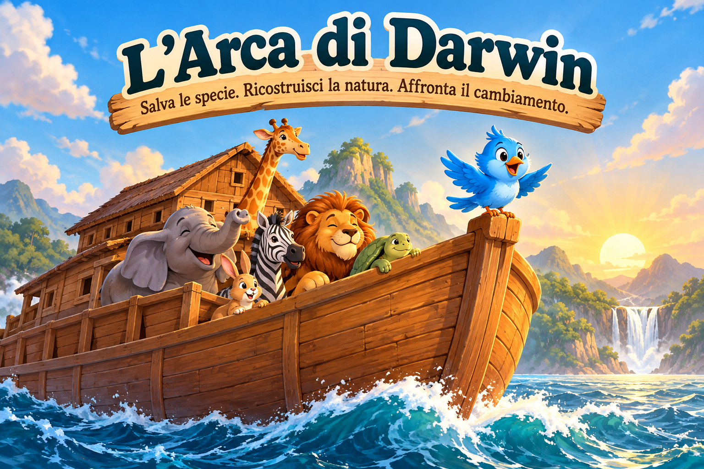

L'Arca di Darwin
Salva le specie. Ricostruisci la natura. Affronta il cambiamento.
🐦
L'Uccellino Azzurro della Felicità
Benvenuto a bordo! Ti guiderò io!
🚢 La Stiva — Prima notte del Diluvio
🚢 Posti: 4
Ogni specie consuma risorse. Un ecosistema con troppi predatori rispetto agli erbivori non è sostenibile.
🧩 Rompicapo del piccione
🚢 All'interno dell'Arca
Seleziona quattro animali e usa ◀ ▶ per sistemarli. Leone e zebra, lupo e coniglio non possono stare vicini.
⚓ Ponte inferiore — Compartimenti
🐦
L'Uccellino Azzurro sorveglia l'imbarco!
🐾 Scegli gli animali
Imbarcati: 0 / 4